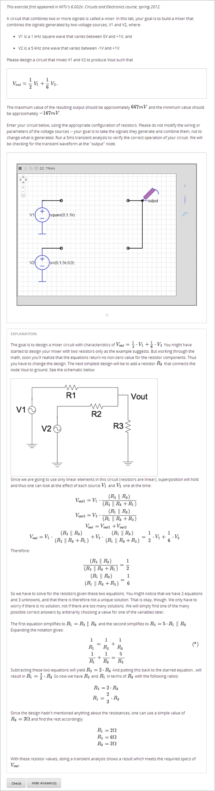

在电路原理图搭建问题中，学生可以在一个互动网格中排列如电压电源、电容器、电阻和场效应管等电路元件。 他们可以向系统提交电路的DC、AC或瞬态分析，以获得评分。
问题代码
将以下代码粘贴至高级编辑器中，创建上图中的问题。
<problem>
<p>Make a voltage divider that splits the provided voltage evenly.</p>
<schematicresponse>
<center>
<schematic height="500" width="600" parts="g,r" analyses="dc"
initial_value="[["v",[168,144,0],{"value":"dc(1)","_json_":0},["1","0"]],["r",[296,120,0],{"r":"1","_json_":1},["1","output"]],["L",[296,168,3],{"label":"output","_json_":2},["output"]],["w",[296,216,168,216]],["w",[168,216,168,192]],["w",[168,144,168,120]],["w",[168,120,296,120]],["g",[168,216,0],{"_json_":7},["0"]],["view",-67.49999999999994,-78.49999999999994,1.6000000000000003,"50","10","1G",null,"100","1","1000"]]"
/>
</center>
<answer type="loncapa/python">
dc_value = "dc analysis not found"
for response in submission[0]:
if response[0] == 'dc':
for node in response[1:]:
dc_value = node['output']
if dc_value == .5:
correct = ['correct']
else:
correct = ['incorrect']
</answer>
</schematicresponse>
<schematicresponse>
<p>Make a high pass filter.</p>
<center>
<schematic height="500" width="600" parts="g,r,s,c" analyses="ac"
submit_analyses="{"ac":[["NodeA",1,9]]}"
initial_value="[["v",[160,152,0],{"name":"v1","value":"sin(0,1,1,0,0)","_json_":0},["1","0"]],["w",[160,200,240,200]],["g",[160,200,0],{"_json_":2},["0"]],["L",[240,152,3],{"label":"NodeA","_json_":3},["NodeA"]],["s",[240,152,0],{"color":"cyan","offset":"0","_json_":4},["NodeA"]],["view",64.55878906250004,54.114697265625054,2.5000000000000004,"50","10","1G",null,"100","1","1000"]]"/>
</center>
<answer type="loncapa/python">
ac_values = None
for response in submission[0]:
if response[0] == 'ac':
for node in response[1:]:
ac_values = node['NodeA']
print "the ac analysis value:", ac_values
if ac_values == None:
correct = ['incorrect']
elif ac_values[0][1] < ac_values[1][1]:
correct = ['correct']
else:
correct = ['incorrect']
</answer>
</schematicresponse>
<solution>
<div class="detailed-solution">
<p>Explanation</p>
<p>A voltage divider that evenly divides the input voltage can be formed with two identically valued resistors, with the sampled voltage taken in between the two.</p>
<p><img src="/c4x/edX/edX101/asset/images_voltage_divider.png"/></p>
<p>A simple high-pass filter without any further constaints can be formed by simply putting a resister in series with a capacitor. The actual values of the components do not really matter in order to meet the constraints of the problem.</p>
<p><img src="/c4x/edX/edX101/asset/images_high_pass_filter.png"/></p>
</div>
</solution>
</problem>